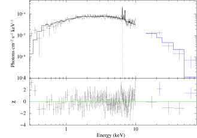

IGR J14257-6117، قزم أبيض مغناطيسي متراكم ذو تضمين مداري شديد القوة في الأشعة السينية
الملخص
IGR J14257-6117 مصدر غير مصنف في فهارس الأشعة السينية الصلبة. وتشير المتابعات البصرية إلى أنه قد يكون متغيرًا كارثيًا من النوع المغناطيسي. نعرض أول رصد بالأشعة السينية بنسبة إشارة إلى ضجيج مرتفعة أجرته XMM-Newton عند 0.3–10 keV، مكمّلًا بتغطية عند 10–80 keV بواسطة Swift/BAT، بهدف كشف طبيعة المصدر. اكتشفنا لأول مرة تغيرية دورية سريعة عند 509.5 s وتغيرية دورية أطول عند 4.05 h، ونُسبتا على الترتيب إلى فترة دوران القزم الأبيض (WD) حول نفسه وإلى الفترة المدارية للثنائي. وهذا يعرّف IGR J14257-6117 على نحو لا لبس فيه بوصفه متغيرًا كارثيًا مغناطيسيًا من نوع القطبي المتوسط (IP). وتكشف منحنيات الضوء المحللة طاقيًا عند كلتا الفترتين عن سعات تتناقص مع ازدياد الطاقة، إذ يبلغ التضمين المداري في أنعم نطاق طاقي. ويُظهر طيف الطاقة إصدارًا حراريًا رقيقًا بصريًا مع فائض عند مركب الحديد، ممتصًا بوسطين كثيفين ()، يغطيان مصدر الأشعة السينية جزئيًا. ومن المرجح أن يكونا متموضعين في تدفق التراكم المحصور مغناطيسيًا فوق سطح القزم الأبيض وعند حافة القرص، فينتجان التغيريتين الدورانية والمدارية المعتمدتين على الطاقة، على الترتيب. ينضم IGR J14257-6117 إلى مجموعة القطبيات المتوسطة ذات أقوى تضمين مداري، التي باتت تضم الآن أربعة أنظمة. وبالاستناد إلى أوجه الشبه مع ثنائيات الأشعة السينية منخفضة الكتلة التي تُظهر انخفاضات مدارية، ينبغي أن تُرى هذه القطبيات المتوسطة عند ميول مدارية كبيرة تسمح لمادة امتصاصية ممتدة سمتيًا وثابتة في إطار الثنائي بأن تعترض خط النظر. وبالنسبة إلى IGR J14257-6117، نقدّر (). ولا يمكن بالبيانات الحالية الجزم بما إذا كان معدل التراكم الكتلي يؤدي أيضًا دورًا في التضمينات المدارية الكبيرة في القطبيات المتوسطة.
keywords:
المستعرات، المتغيرات الكارثية - الأقزام البيضاء - الأشعة السينية: جرم منفرد: IGR J14257-6117 (المعروف أيضًا باسم 4PBC J1425.1-6118)1 مقدمة
تحسن فهمنا للسماء في الأشعة السينية الصلبة تحسنًا كبيرًا بفضل المسوح العميقة التي أجراها القمران الصناعيان Swift/BAT وINTEGRAL /IBIS عند طاقات أكبر من 20 keV (Cusumano et al., 2010; Bird et al., 2016). ونحو 20 في المائة من المصادر المجرية المكتشفة في هذه المسوح هي متغيرات كارثية، يستضيف معظمها أقزامًا بيضاء أولية مغناطيسية (MCVs). وتنقسم هذه الأجرام إلى صنفين فرعيين تبعًا لقوة المجال المغناطيسي للقزم الأبيض ودرجة اللاتزامن. تمتلك القطبيات مجالات مغناطيسية أقوى (B G)، وهي تزامن في النهاية النظام الثنائي ()، ومن ثم لا تمتلك قرص تراكم. أما القطبيات المتوسطة (IPs) فتحتوي أقزامًا بيضاء تدور دورانًا غير متزامن (؛ انظر مثلًا Bernardini et al., 2017) ومن ثم يُعتقد أنها تمتلك مجالات مغناطيسية أضعف (B G)، وبذلك يمكن أن يتشكل قرص مبتور عند نصف القطر المغناطيسي. ولمراجعتين حديثتين عن الأقزام البيضاء المغناطيسية والمتغيرات الكارثية، على الترتيب، انظر Ferrario, de Martino & Gänsicke (2015) وMukai (2017).
توفر المتابعات البصرية للمصادر التي لا تزال غير محددة في فهارس BAT وIBIS مرشحات ملائمة للمتغيرات الكارثية المغناطيسية (انظر مثلًا Masetti et al., 2013; Halpern & Thorstensen, 2015, والمراجع الواردة فيه). غير أن التصنيف السليم يستند إلى الأشعة السينية، ولا سيما إلى كشف إشارة متماسكة عند فترة دوران القزم الأبيض وإلى توصيف طيف الطاقة عريض النطاق (انظر مثلًا Bernardini et al., 2012, 2014, والمراجع الواردة فيه). وتدل الدوريات القصيرة في الأشعة السينية على أن تدفق التراكم الداخلي يتبع خطوط المجال المغناطيسي للقزم الأبيض، ليصل في النهاية إلى سطح الجسم المدمج، شاهدًا بذلك على أن القزم الأبيض مغناطيسي بالفعل. وبما أن للتدفق سرعة فوق صوتية، تتشكل صدمة منفصلة وتبرد المادة في منطقة ما بعد الصدمة (PSR) وتتبطأ عبر إشعاع الكبح الإشعاعي (أشعة سينية صلبة) والإشعاع السيكلوتروني (بصري/قريب من تحت الأحمر) (Aizu, 1973; Wu, Chanmugam & Shaviv, 1994; Cropper et al., 1999)، وتعتمد كفاءته أساسًا على شدة المجال المغناطيسي (Woelk & Beuermann, 1996; Fischer & Beuermann, 2001). ويكون الإشعاع السيكلوتروني أكثر كفاءة في أنظمة المجالات المغناطيسية الشديدة، مثل القطبيات، في حين أن القطبيات المتوسطة أنظمة يهيمن عليها الكبح الإشعاعي، ولذلك فهي عمومًا باعثات أصلب في الأشعة السينية. وتتسم أطياف الأشعة السينية للمتغيرات الكارثية المغناطيسية أيضًا بالحضور الشائع لخط Fe Kα عند 6.4 keV، الناجم عن انعكاس كومبتون من سطح القزم الأبيض شبه المتعادل (Mukai, 2017)، كما تتسم في بعض الحالات بإصدار جسم أسود لين في الأشعة السينية ( eV) بسبب التحويل الحراري للأشعة السينية الصلبة، على الأرجح من المنطقة القطبية على سطح القزم الأبيض. وفي الوقت الحاضر، وبفضل أجهزة الأشعة السينية ذات نسبة الإشارة إلى الضجيج العالية مثل XMM-Newton، أصبح مكوّن الجسم الأسود اللين يُكتشف كثيرًا في القطبيات المتوسطة أيضًا، لا في القطبيات وحدها كما بدا في الأصل (انظر مثلًا Bernardini et al., 2017, والمرجع الوارد فيه).
IGR J14257-6117 هو أحد مصادر BAT وIBIS التي لا تزال غير مصنفة، ولم تُدرس خصائصه في الأشعة السينية بعد. وقد اقتُرح أنه متغير كارثي مغناطيسي بسبب خصائصه الطيفية البصرية التي تُظهر إصدارات قوية لخطوط بالمر وHe I وHe II (Masetti et al., 2013). ونقدم هنا أول بيانات متزامنة في الأشعة السينية والبصرية جُمعت باستخدام XMM-Newton ومُكملت بتغطية طيفية عالية الطاقة من Swift/BAT، مما يتيح لنا تعريفه على نحو لا لبس فيه عضوًا جديدًا في صنف القطبيات المتوسطة، مع تضمين مداري قوي على نحو خاص في الأشعة السينية.
2 الرصد واختزال البيانات
2.1 أرصاد XMM-Newton
رُصد IGR J14257-6117 في 2017-01-20 بواسطة XMM-Newton باستخدام كاميرات التصوير الفوتوني الأوروبية (EPIC: PN، MOS1 وMOS2 Strüder et al., 2001; Turner et al., 2001; den Herder et al., 2001) بوصفها الأجهزة الرئيسة، مع قياسات ضوئية متزامنة بالمراقب البصري (OM, Mason et al., 2001). وترد تفاصيل الرصد في الجدول 1. عولجت البيانات باستخدام برنامج تحليل العلوم (SAS) بالإصدار 16.1.0 وبأحدث ملفات المعايرة المتاحة في تشرين الأول/أكتوبر 2017.
| Source Name | Telescope | OBSID | Instrument | Date | UTstart | Texp a | Net Source Count Rate |
|---|---|---|---|---|---|---|---|
| Coordinates (J2000)b | yyyy-mm-dd | hh:mm | ks | c/s | |||
| IGR J14257-6117 | XMM-Newton | 0780700101 | EPIC-PNc | 2017-01-20 | 07:02 | 37.5 | |
| EPIC-MOS1c | 2017-01-20 | 06:57 | 37.7 | ||||
| RA=14:25:07.58 | EPIC-MOS2c | 2017-01-20 | 06:57 | 37.7 | |||
| Dec=-61:18:57.8 | OM-Vd | 2017-01-20 | 07:03 | 33.3 | |||
| Swift | BATf | 8581 |
a زمن التعريض الصافي.
b إحداثيات النظير البصري.
c نمط النافذة الصغيرة (استُخدم مرشح رقيق).
d نمط النافذة السريعة. الطول الموجي المركزي لمرشح V هو 5430 Å.
e القدر الآلي لأداة OM.
f جُمعت كل التوجيهات المتاحة من كانون الأول/ديسمبر 2004 إلى أيلول/سبتمبر 2010.
استُخرجت قوائم أحداث فوتونات المصدر وأطيافه لكاميرات EPIC من منطقة دائرية نصف قطرها 40 ثانية قوسية. واستُخرجت الخلفية من الشريحة CCD نفسها التي يقع فيها الهدف، مع اختيار منطقة خالية من تلوث المصادر وتجنب فجوات CCD. تأثر الرصد بفترات معتدلة من خلفية الجسيمات، فأزيلت على نحو محافظ في جميع الأجهزة لأجل التحليل الطيفي، أما في التحليل الزمني فاستخدمت مجموعة البيانات كلها.
أُنتجت منحنيات الضوء PN وMOSs المطروحة الخلفية باستخدام المهمة epiclccorr في عدة نطاقات طاقية، وبأحجام صناديق زمنية مختلفة بحسب معدلات المصدر والخلفية. وصُححت أزمنة وصول الأحداث إلى مركز الكتلة الشمسي باستخدام المهمة barycen. وقبل الملاءمة، أُعيد تجميع الأطياف باستخدام specgroup. فُرض حد أدنى قدره 50 و25 عدة في كل صندوق لـPN وMOSs، على الترتيب، كما فُرض حد أقصى للإفراط في أخذ العينات من ميز الطاقة بمعامل ثلاثة. واستُخرجت أيضًا أطياف محللة طورياً عند الحدين الأدنى والأقصى لدورة الدوران والدورة المدارية. وولدت مصفوفة الاستجابة والملفات المساعدة باستخدام المهمتين rmfgen وarfgen، على الترتيب. وكانت أطياف RGS1 وRGS2 ذات نسبة إشارة إلى ضجيج ضعيفة لا تسمح بتحليل مفيد. ولُوئمت أطياف PN وMOSs معًا باستخدام حزمة Xspec بالإصدار 12.9.1p (Arnaud, 1996).
شُغّل OM في نمط النافذة السريعة باستخدام مرشح النطاق V (5100–5800 Å). ووُلّد منحنى الضوء المطروح الخلفية بواسطة المهمة omfchain بزمن صندوق قدره 10 s، ثم طُبق تصحيح مركز الكتلة الشمسي.
2.2 أرصاد Swift
نُزلت أطياف Swift/BAT ذات القنوات الثماني وملف الاستجابة من أول 66 شهرًا من رصد BAT (Baumgartner et al., 2013) من الأرشيف المتاح للعموم في موقع Palermo BAT11 1 http://bat.ifc.inaf.it/. ويُكشف IGR J14257-6117 حتى 80 keV، ولذلك قصرنا التحليل الطيفي على هذا الحد.
3 تحليل البيانات والنتائج
3.1 التحليل الزمني
تشير النتائج المعروضة في هذا القسم إلى تحليل مجموع ملفات أحداث المصدر ومنحنيات الضوء المطروحة الخلفية للكاميرات الثلاث EPIC. وتظهر بوضوح دورتان ونصف دورة من تغيرية دورية طويلة الأمد في منحنى الضوء 0.3–12 keV المطروح الخلفية، مع تغيرات دورية قصيرة الأمد متراكبة (الشكل 1). وأُعيد تجميع منحنى الضوء في الأشعة السينية بشدة لإزالة أي تغير قصير الأمد. وتعطي ملاءمة بجيب واحد مضافًا إليه ثابت فترة قدرها 4.050.06 h وكسرًا نبضيًا (PF)22 2 ، حيث إن و هما على الترتيب التدفقان الأقصى والأدنى للجيب عند التردد الأساسي. قدره 44 في المائة. وقد فسرناها طبيعيًا بأنها الفترة المدارية للنظام الثنائي (P). وترد جميع اللاتيقنات فيما يلي عند مستوى ثقة . وتتحسن الملاءمة قليلًا بإدراج التوافقية الأولى، معطية فترة قدرها 4.020.04 h. بعد ذلك، حُسبت أطياف القدرة لملف أحداث المصدر 0.3–12 keV، وقد أظهرت، إلى جانب القمة القوية منخفضة التردد الناجمة عن التضمين المداري، قمتين أقل شدة ومتقاربتين عند تردد أعلى ( mHz) (الشكل 2). واستُخدمت تقنية ملاءمة الطور (انظر مثلًا Dall’Osso et al., 2003) لتحديد فترة الإشارة الأقوى بدقة. وتكون النتيجة 509.50.5 s مع PF في المائة. وتُكشف أيضًا قمة أضعف عند توافقيتها الأولى عند مستوى ثقة 7، وبـ PF قدره 3.6 في المائة (انظر الجدول 3). وفسرنا الفترة 509.5 s بأنها فترة دوران النجم الأولي المتراكم حول نفسه (P). وبما أن مثل هذه الدوارات البطيئة لا توجد إلا في ثنائيات الأشعة السينية عالية الكتلة ولا توجد قط في LMXBs، وبما أن الخصائص البصرية لـIGR J14257-6117 نموذجية للمتغيرات الكارثية/LMXBs، يمكننا تحديده بثقة بوصفه متغيرًا كارثيًا مغناطيسيًا من نوع القطبي المتوسط. وتضع نسبة فترة الدوران إلى الفترة المدارية البالغة 0.03 IGR J14257-6117 بين غالبية الأنظمة غير المتزامنة المؤكدة حتى الآن في مستوى فترة الدوران والفترة المدارية (Bernardini et al., 2017). أما الإشارة الثانية الأضعف فتوجد عند الفترة الأطول قليلًا، 526.82.0 s، باستخدام مهمة FTOOLS33 3 http://heasarc.gsfc.nasa.gov/ftools/ efsearch (Blackburn, 1995). وتُفسر هذه على أنها التردد الجانبي (، أي الخفقان) بين فترتي الدوران والمدار. ونلاحظ أن هذا هو التردد الجانبي الأقوى الذي يوجد عادة في القطبيات المتوسطة. وتبين أن نسبة سعة الدوران إلى سعة الخفقان هي 1.40.2 (انظر أيضًا القسم 4). ومن الأخيرة نستنتج أيضًا P h، وهي متسقة ضمن مع الفترة المدارية المستحصلة من ملاءمة منحنى الضوء في الأشعة السينية. ولملخص الخصائص الزمنية لـIGR J14257-6117 انظر الجدول 2.
أما منحنى الضوء في النطاق V فلم يُظهر تغيرية دورية واضحة، لكن عند طيه على الفترة المدارية في الأشعة السينية يُكشف تضمين فوق مستوى ثقة 3. وهو أضعف بكثير من نظيره في الأشعة السينية، إذ إن PF له لا يتجاوز 15 في المائة (الشكل 1).
ولفحص التغيرات الطيفية على امتداد فترة الدوران، طويت منحنيات الضوء المطروحة الخلفية عند P ثم حُسبت نسب الصلادة (HRs، المعرفة بأنها نسبة معدل العد في كل صندوق طور بين نطاقين طاقيين مختارين). وكُشف تصلب طيفي عند حد الدوران الأدنى (). ولتكميم تغير إشارة الدوران بالنسبة إلى مجال الطاقة، حُسب PF في خمسة نطاقات طاقية (0.3–1، 1–3، 3–5، و5–12 keV) بملاءمة التضمين بجيب عند التردد الأساسي. وينخفض PF قليلًا عند ازدياد الطاقة من قيمة قصوى 17.5 في المائة (0.3–1 keV) إلى قيمة دنيا قدرها 6.2 في المائة (5–12 kev؛ الجدول 3 والشكل 3). وهذا السلوك يدل على امتصاص كهروضوئي من مادة متعادلة متموضعة فوق المنطقة القطبية الباعثة للأشعة السينية.
وفُحصت أيضًا التغيرات الطيفية (HRs) بوصفها دالة في الفترة المدارية. وتنخفض سعة التضمين المداري أيضًا مع ازدياد الطاقة، مع PF قدره في المائة في 0.3-1 keV إلى في المائة في أصلب نطاق (الجدول 3 والشكل 4). ويكون الطيف أصلب بوضوح أثناء الحدود المدارية الدنيا، مما يدل على وجود مادة متعادلة إضافية متموضعة في منطقة ثابتة في إطار الثنائي.
| P | P | P | P | A/A | P |
| s | s | h | h | h | |
| 509.50.5 | 526.82.0 | 4.300.53 | 4.050.06 | 1.40.2 | 4.050.06 |
| Pulsed Fraction | |||||
| Period | 0.3–2 keV | 2–3 keV | 3–5 keV | 5–12 keV | 0.3–12 keVa |
| % | % | % | % | % | % |
| 182 | 153 | 72 | 62 | 9.71.6 | |
| 843 | 603 | 332 | 122 | 442 | |
a تمتلك التوافقيتان الأوليان في المائة و في المائة.
3.2 التحليل الطيفي
أُجريت ملاءات الطيف المتوسط عريض النطاق على أطياف كاميرات EPIC الثلاثة مع BAT معًا، مغطية المجال من 0.3 إلى 80 keV. واستُخدم ثابت معايرة بينية (مثبت إلى واحد لـPN فقط) لأخذ فروق معايرة الأجهزة والتغيرية الطيفية الناتجة عن كون بيانات BAT غير متزامنة في الحسبان. وربطت جميع معاملات النموذج بين الأجهزة المختلفة باستثناء الثوابت الضربية.
يمتلك IGR J14257-6117 طيفًا حراريًا يُظهر إصدارًا عند مركب الحديد. وهذه خصائص تُرصد عمومًا في المتغيرات الكارثية، ولا سيما في الأنظمة المغناطيسية، التي تمتلك عادة أطيافًا متعددة الحرارة ممتصة محليًا بمادة باردة كثيفة (انظر مثلًا Done, Osborne & Beardmore, 1995; Ezuka & Ishida, 1999; Beardmore, Osborne & Hellier, 2000; de Martino et al., 2004; Bernardini et al., 2012, 2013; Mukai et al., 2015; Bernardini et al., 2017). وبناءً على ذلك، لُوئم الطيف عريض النطاق باستخدام نموذج يتكون من مكوّن بلازما رقيق بصريًا (mekal أو cemekl في Xspec)، مع ترك الوفرة المعدنية (AZ) بالنسبة إلى الشمس44 4 ثبتنا الوفرة عند وفرة ISM المأخوذة من Wilms, Allen & McCray (2000) حرة في التغير، إضافة إلى خط غاوسي ضيق مُثبت عند 6.4 keV يمثل سمة Fe Kα الفلورية، وكل ذلك ممتص بعمود تغطية كلي (phabs) وعمودين جزئيين (pcfabs). ففي الواقع، تُظهر الملاءمة بعمود امتصاص جزئي واحد فقط بقايا واضحة دون 1 keV. لذلك، وكما هي الحال في قطبيات متوسطة أخرى تُظهر تضمينًا مداريًا قويًا (Bernardini et al., 2017)، أُدرج ماص ثان في الملاءمة الطيفية. ويُسوغ استخدام مكوّنين من pcfabs أيضًا بأن شدتي تضميني الدوران والمدار تنخفضان مع ازدياد الطاقة، ومن ثم فهما على الأرجح ناجمتان عن مكوّنين مختلفين. وحصلنا على ملاءات مقبولة إحصائيًا باستخدام بلازما متعددة الحرارة (cemekl) (، 319 درجة حرية) وبلازما وحيدة الحرارة (mekal) (، 319 درجة حرية) (الجدول 4).
إن الماص الكلي أقل بمرتبة مقدار واحدة من ماص ISM في اتجاه المصدر (Kalberla et al., 2005). وتمتلك الماصات ذات التغطية الجزئية كثافات من رتبة cm2 (Pcf1) و cm-2 (Pcf2)، كما أن كسور تغطيتها كبيرة: في المائة (Pcf1) و في المائة (Pcf2). ولا يتطلب الطيف مكوّنًا لينًا سميكًا بصريًا (مثلًا kT eV). وفي حالة cemekl، تكون درجة حرارة البلازما العظمى سيئة التقييد حتى من دون تثبيت القيمة عند 1 لمؤشر قانون القدرة ، واستنتجنا حدًا أدنى عند قدره 35 keV. وهذا أعلى بكثير من القيمة المشتقة باستخدام mekal، حيث kT keV. ومع ذلك، نلاحظ أنه في الحالة الأخيرة تمثل درجة الحرارة متوسطًا على PSR كلها، لذلك لا يُتوقع أن تكون درجتا الحرارة متسقتين. ونلاحظ أنه حتى لو كان حدًا أدنى، فإن درجة حرارة cemekl ينبغي أن تُعد تقديرًا أكثر موثوقية لدرجة حرارة الصدمة. وفحصنا أيضًا ما إذا كان مكوّن انعكاس مطلوبًا في الملاءات الطيفية، كما يشير إليه وجود خط الحديد الفلوري عند 6.4 keV (EW=18020eV)، وهو ما من شأنه تخفيف مشكلة هذا الحد الأدنى المرتفع لدرجة الحرارة العظمى. غير أن هذا المكوّن غير مطلوب إحصائيًا في الملاءات الطيفية.
وللحصول على تقدير لكتلة القزم الأبيض المتراكم، لُوئم طيف الاستمرارية عريض النطاق أيضًا (فوق 3 keV فقط) بالنموذج الأكثر فيزيائية الذي طوره Suleimanov, Revnivtsev & Ritter (2005)، والذي يأخذ في الحسبان كلًا من تدرجات الحرارة والجاذبية داخل PSR. ويعطي ذلك كتلة ضعيفة التقييد: M (، 189 درجة حرية). غير أنها متسقة ضمن مع الحد الأدنى للكتلة المشتق باستخدام درجة حرارة cemekl العظمى (). ومن الواضح أن طيف Swift/BAT منخفض الجودة جدًا بحيث لا يسمح بالحصول على كتلة دقيقة للقزم الأبيض، ولذلك تلزم بيانات ذات نسبة إشارة إلى ضجيج أعلى (انظر Suleimanov et al., 2016; Shaw et al., 2018).
ولاستقصاء دور المعاملات الطيفية في توليد تضمين الدوران في الأشعة السينية، أُجري تحليل طيفي محلل بحسب طور الدوران (PPS). ولُوئمت أطياف EPIC المستخرجة عند الحدين الأقصى والأدنى للدوران على حدة باستخدام كلا النموذجين المعروضين في الجدول 4. وثُبتت N وAZ وkT (التي تكون بخلاف ذلك غير مقيدة) عند قيم أفضل ملاءمة للطيف المتوسط. وتركت جميع المعاملات الأخرى، ومن ثم ماصا التغطية الجزئية والتطبيع الغاوسي، حرة في التغير. وعلى الأرجح بسبب انخفاض PF (الجدول 3)، تكون جميع المعاملات الحرة ثابتة ضمن أقل من . وأُجري تحليل مماثل أيضًا على أطياف EPIC المستخرجة عند الحدين المداريين الأقصى والأدنى. وفي هذه المرة، تُرك مكوّنا التغطية الجزئية فقط حرين في التغير، وثُبتت جميع مكونات النموذج الأخرى عند قيم أفضل ملاءمة للطيف المتوسط. ويكون الطيف عند الحد المداري الأدنى أصلب بوضوح. ويرجع ذلك إلى تغير مهم في ماصي التغطية الجزئية كليهما، إذ يزدادان عند الحد المداري الأدنى. وبوجه خاص، في حالة كل من cemekl وmekal، تزداد N وN بمعامل و، على الترتيب. ومن ناحية أخرى، يزداد كسر التغطية لـPc1 زيادة مهمة عند الحد المداري الأدنى، لكن لا يزداد كسر تغطية الماص الأعلى كثافة (Pc2)، الذي وُجد أنه ثابت ضمن (الجدول 5). ولذلك، في حين نعجز عن تحديد أي الماصين مسؤول أساسًا عن تغيرية الدوران، يبدو أن الماص الأقل كثافة (Pc1) هو المساهم الرئيس في التغيرية المدارية.
| mod. | N | N | cvf | N | cvf | kT | n | AZ | EW | F0.3-10 | FX,bol | /dof |
| cm-2 | cm-2 | % | cm-2 | % | keV | keV | erg/cm2/s | erg/cm2/s | ||||
| cemeka | 0.220.10 | 1.87 | 813 | 202 | 654 | b | 10.00.5 | 1.30.3 | 0.180.02 | 4.60.1 | 0.98/319 | |
| mek | 0.360.07 | 3.10.8 | 743 | 286 | 633 | 5.30.4 | 0.680.13 | 0.180.01 | 4.60.1 | 1.03/319 |
a ثُبت مؤشر قانون القدرة متعدد الحرارة عند 1.
b حد أدنى عند . قيمة أفضل ملاءمة هي 80 keV، لكنها سيئة التقييد.

| model | Orb. | N | cvf | N | cvf | F0.3-10 | /dof |
| 1022 cm-2 | % | 1022 cm-2 | % | ||||
| cemek | Max | 1.50.2 | 801 | 15.21.2 | 582 | 5.00.1 | 1.07/275 |
| Min | 4.60.8 | 921 | 354 | 715 | 3.40.1 | 1.04/127 | |
| mek | Max | 2.40.3 | 702 | 252 | 602 | 5.10.1 | 1.10/275 |
| Min | 6.41.0 | 911 | 485 | 714 | 3.40.1 | 1.08/127 |
4 المناقشة والاستنتاجات
يقع IGR J14257-6117 قريبًا جدًا من المستوى المجري (). والامتصاص المجري الكلي في اتجاه المصدر عالٍ ( cm-2 Kalberla et al., 2005). ومع ذلك، فإن NH المشتقة من الملاءات الطيفية أقل منه بمعامل ، مما يشير إلى جسم مجري قريب (انظر أيضًا Masetti et al., 2013, لاستنتاج مماثل مشتق من امتصاص النطاق V). وللحصول على تقدير لمسافة المصدر نستخدم بيانات الأشعة تحت الحمراء القريبة. أُدرج IGR J14257-6117 في فهرس 2MASS باسم 2MASS J14250758-6118578. ولا يُكشف إلا في النطاق J، مع J mag (وحدود عليا H14.8 وK14.4 mag). وقد أزلنا الاحمرار بافتراض N cm-2 (كما اشتُقت من طيف الأشعة السينية المتوسط)، وهو ما يترجم (Güver & Özel, 2009) إلى A (وA). وبالنسبة إلى متغير كارثي في مدار 4.05 h، يُتوقع مانح من النوع M3.5 مع M mag (Knigge, Baraffe & Patterson, 2011). وبافتراض أن النجم المانح يساهم كليًا في تدفق النطاق J (بعد إزالة الاحمرار، J=15.85 mag)، نستنتج مسافة pc (مع افتراض لاتيقن قدره 40 في المائة). وباعتماد هذه المسافة، نقدر لمعان التراكم كما يلي: erg/s، حيث يُقيّم على المجال الواسع 0.01–100 keV. وباعتماد حد أدنى محافظ لكتلة القزم الأبيض قدره ، يترجم ذلك إلى حد أعلى لمعدل التراكم الكتلي، . وإذا كانت المسافة أكبر بكثير، كما من الغلاف الأعلى لتقدير المسافة (900 pc)، فإن معدل التراكم الكتلي يكون محدودًا بحد أعلى قدره . وكما في حالة غالبية القطبيات المتوسطة (مثلًا انظر Bernardini et al., 2012, 2017)، وُجد أن أقل من معدل انتقال الكتلة الدهري الذي تتنبأ به نماذج جمهرة المتغيرات الكارثية الحالية، في حالة ثنائي فوق فجوة الفترة المدارية يتطور بواسطة الكبح المغناطيسي في مدار 4-h (؛ Howell, Nelson & Rappaport, 2001). ينبغي التعامل مع هذه التقديرات بحذر لأن جزءًا غير مهمل من إصدار الأشعة السينية قد يُعاد معالجته في تدفق التراكم (مثل تدفق التراكم المحصور مغناطيسيًا فوق الصدمة وقرص التراكم) ويشع عند طاقات أخفض. وقد وُجدت معدلات انتقال كتلي منخفضة أيضًا في عدد متزايد من المتغيرات الكارثية فوق فجوة الفترة المدارية 2-3 h باستخدام درجة الحرارة الفعالة للنجم الأولي غير المسخن، عندما يكون مكتشفًا (انظر Pala et al., 2017).
ومن ثم فإن IGR J14257-6117 قطبي متوسط فوق الفجوة، بنسبة فترة دوران إلى فترة مدارية ، كما أن موقعه في مستوى Pω مقابل PΩ (انظر الشكل 6، اللوح الأيسر في Bernardini et al., 2017) يقع حيث تتموضع غالبية أنظمة صنفه، مؤكدًا أن الجمهرة الحالية المرصودة من القطبيات المتوسطة تهيمن عليها أنظمة فوق فجوة الفترة. وما إذا كانت ندرة أنظمة القطبيات المتوسطة دون الفجوة (انظر أيضًا Pretorius & Mukai, 2014) ناجمة عن مؤثرات انتقائية في اكتشافها (مصادر أشعة سينية خافتة) أو عن أن جميع القطبيات المتوسطة تقريبًا تتطور فعلًا إلى قطبيات ضعيفة المجال، لا يزال مشكلة مفتوحة ينبغي تناولها ببعثات مسح مستقبلية حساسة في الأشعة السينية مثل eROSITA.
وُجد أن IGR J14257-6117 يُظهر تضمينات الدوران والخفقان والمدار. وتبين أن تغيرية الدوران أضعف كثيرًا من تلك عند الفترة المدارية. إن اعتماد التضمين الدوراني على الطاقة سمة موجودة أيضًا في غالبية أنظمة القطبيات المتوسطة ومتسقة مع سيناريو ستارة التراكم (Rosen, Mason & Cordova, 1988)، حيث يحدث التراكم المحصور مغناطيسيًا في تدفق على شكل ستارة. ويعود التصلب عند حد الدوران الأدنى إلى أن الستارة تشير نحو الراصد عندما يكون الامتصاص في تدفق ما قبل الصدمة في أقصاه. وتدل تغيرية الدوران على أن المادة تتراكم عبر قرص. غير أن كشف تغيرية غير مهملة عند التردد الجانبي يعني أن المادة تفيض أيضًا فوق القرص بنسبة في المائة من التدفق الكلي. وتُرصد هندسة التراكم الهجينة هذه أيضًا في كثير من القطبيات المتوسطة الأخرى، مما يدل على أنها ليست غير مألوفة في هذه الأنظمة (Bernardini et al., 2012; Hellier, 2014; Bernardini et al., 2017).
IGR J14257-6117 هو أيضًا أحد أعضاء صنف القطبيات المتوسطة الذي يُظهر منحنى ضوء في الأشعة السينية مضمنًا بقوة عند الفترة المدارية. وتبدو التضمينات المدارية في الأشعة السينية المعتمدة على الطاقة خاصية شائعة للقطبيات المتوسطة، كما وُجد في بعض الأنظمة أنها تتغير على مقاييس زمنية من سنوات (انظر مثلًا Parker, Norton & Mukai, 2005; Bernardini et al., 2017)، مع الحالة الفريدة لـFO Aqr التي دخلت حالة منخفضة في ربيع 2016 واستعادت حالتها العالية في نهاية 2016 (Kennedy et al., 2016, 2017). كما رُصدت تغيرات طويلة الأمد في سعات تغيريات الدوران والمدار والخفقان في القطبيات المتوسطة في كل من الأشعة السينية (Norton et al., 1997; Beardmore et al., 1998; Staude et al., 2008) والأطوال الموجية فوق البنفسجية/البصرية (de Martino et al., 1999)، مصحوبة بتغيرات معتدلة في سطوعها. وتُنسب هذه التغيرات إلى تغيرات في معدل التراكم الكتلي، الذي يعدل بدوره هندسة التراكم. وبوجه خاص، تُفسر التغيرات في سعات الدوران إلى الخفقان بأنها زيادة أو نقصان في مساهمة فيض القرص (انظر Hellier, 2014). إن وجود تضمين مداري قوي ومعتمد على الطاقة يدل على مادة امتصاصية ثابتة في الإطار المداري. ولا يسمح غياب تقويم فلكي طيفي مداري لنا بتحديد موضع الاقتران العلوي للنجم المانح أو للقزم الأبيض على نحو صحيح، لكن بالاستناد إلى أوجه الشبه مع قطبيات متوسطة أخرى تُظهر أيضًا تضمينات مدارية معتمدة على الطاقة، ينبغي أن تكون هذه المادة متموضعة عند حافة القرص الخارجية، حيث يصطدم تيار المادة القادم من المرافق بالقرص. ويدعم وجود فيض القرص كذلك سيناريو منطقة ممتدة سمتيًا. وتوجد بنى قرصية أيضًا في LMXBs المرئية عند ميول عالية نسبيًا، وهي ما يسمى "مصادر الانخفاضات"، التي تُظهر انخفاضات دورية عند الفترة المدارية، وتُنسب عمومًا إلى حجب جزئي لمصدر الأشعة السينية بواسطة منطقة متأينة متثخنة من قرص التراكم (Diaz Trigo et al., 2006). وأحيانًا يكون حدوث الانخفاضات متقطعًا، كما رُصد في Aql X-1 في مناسبتين (Galloway et al., 2016). وفي الثنائي فائق الاكتناز 4U 1820-303 يُرصد تضمين مداري بسعة تتغير مع لمعان الأشعة السينية، لكنه غير معتمد على الطاقة (Zdziarski et al., 2007). وقد قيل إن مثل هذه التغيرات تنشأ من تغيرات في معدل التراكم الكتلي بسبب سبق القرص في كلا النظامين. وقد قُدم تفسير مشابه بقرص يسبق للقطبيات المتوسطة التي تُظهر تضمينات مدارية في الأشعة السينية ذات سعة تتغير مع الزمن (Parker, Norton & Mukai, 2005; Norton & Mukai, 2007). غير أن ما إذا كانت التغيرات في معدل التراكم الكتلي ناجمة عن سبق القرص أو عن معدل انتقال كتلة متغير من النجم المانح لا يزال غير واضح. ومن ثم سيُنظر إلى إصدار الأشعة السينية في هذه الأنظمة عبر أعمدة أعلى كثافة في عهود مختلفة، على امتداد فترة السبق. وستنتج المادة العالية الكثافة (حتى ) تضمينًا مداريًا كبيرًا، يُتوقع أن يصل إلى في المائة عند 1 keV، وتضمينًا مهمًا حتى 10 keV (Norton & Watson, 1989; Parker, Norton & Mukai, 2005). وفي IGR J14257-6117 استنتجنا وجود ماصين محليين جزئيي التغطية بكثافتين عموديتين عاليتين: ، cfv1 في المائة و، cfv2 في المائة. وبالبيانات الحالية نعجز عن تحديد أيهما مسؤول على نحو قاطع عن تغيرية سعة الدوران الأضعف وعن التضمين المداري الكبير، وإن بدا أن الماص المركب الأقل كثافة (pcf1) هو المساهم الرئيس في التضمين المداري.
ثم فحصنا ما إذا كانت التغيرية المدارية كبيرة السعة في IGR J14257-6117 تندرج ضمن مخطط عام للقطبيات المتوسطة ذات تضمين يزداد مع ازدياد لمعان الأشعة السينية، ومن ثم معدل التراكم الكتلي. والمعامل الأساسي لتقييم ذلك هو ميل الثنائي، وهو غير محدد جيدًا في القطبيات المتوسطة، لكن يُقترح أنه يتجاوز 60o في جميع القطبيات المتوسطة التي تُظهر تضمينات مدارية في الأشعة السينية (Parker, Norton & Mukai, 2005). ثم جمعنا أعماق التضمين 55 5 يُعرّف بأنه السعة من قمة إلى قمة للجيب المستخدم في ملاءمة كل منحنى ضوء مطوي عند الفترة المدارية، مقسومة على التدفق الأعظمي للجيب. تُرك المستوى المتوسط والسعة والطور للجيب حرة في الملاءمة.، كما قيست من بيانات في مجال 0.7–2 keV، من أجل 12 قطبيات متوسطة. وجمعنا لهذه الأنظمة أيضًا تقديرات المسافة، وعند توفرها ميلها الثنائي66 6 موقع Koji Mukai (https://asd.gsfc.nasa.gov/Koji.Mukai/iphome/iphome.html) (انظر القسم A). ووسعنا العينة إلى 17 مصدرًا بإدراج خمسة أنظمة إضافية وجدنا أنها تُظهر تضمينات مدارية: IGR J14257-6117، وSwift J0927.7-6945 (من الآن فصاعدًا J0927) وSwift J2113.5+5422 (من الآن فصاعدًا J2113) (Bernardini et al., 2017)، وكذلك V709 Cas وNY Lup المدروسين في Mukai et al. (2015). وللاتساق، قيّمنا عمق التضمين كما عرّفه Parker et al. 2005. وبالنسبة إلى جميع مصادر العينة، حسبنا لمعانها البولومتري غير الممتص في مجال 0.01–100 keV (انظر القسم A) بوصفه بديلًا لمعدل التراكم الكتلي في عهد الرصد. وبالنسبة إلى V1223 Sgr وV405 Aur وPQ Gem توجد فترتا رصد، ولذلك أُدرجت كلتاهما في التحليل. وكما يبين الجدول 6، أظهر IGR J14257-6117 وFO Aqr (في 1997) أقوى عمق تضمين مداري (نحو 100 في المائة)، مع أن J0927 وBG CMi يمتلكان أعماق تضمين متسقة ضمن لاتيقناتهما. وتوجد هذه عند لمعان مرتفع نسبيًا ()، لكن لا يُعرف إلا FO Aqr وBG CMi بوصفهما نظامين ذوي ميل متوسط الارتفاع. وربما يمتلك BG CMi، على غرار FO Aqr، ميلًا ثنائيًا أعلى من الحد الأدنى المقدر حتى الآن. غير أن مستويات لمعان مماثلة أو حتى أعلى توجد في أنظمة أخرى تُظهر أعماق تضمين مداري أضعف (20–60 في المائة). ومع أن المسافات يمكن أن تؤثر بقوة في اللمعانات المشتقة، فإن كون الأنظمة ذات الميول المنخفضة، مثل NY Lup وYY Dra وV1223 Sgr، تمتلك أعماق تضمين مداري ضعيفة قد يشير إلى أن ميل الثنائي يؤدي دورًا رئيسًا في تشكيل التضمين المداري في هذه الأنظمة. وبالنسبة إلى القطبيات المتوسطة الثلاثة التي تتوفر لها فترتان، لا توجد علاقة واضحة مع اللمعان، لكن التغيرات الصغيرة في الأعماق قد تشير إلى اختلافات طفيفة في البنية السمتية للمنطقة المسؤولة. وإذا اقتصرنا على الأنظمة التي يكون كشف التضمين المداري فيها فوق 3، يتبقى لدينا تسعة قطبيات متوسطة لا تُوجد لها علاقة واضحة مع اللمعان، ومن ثم مع معدل التراكم الكتلي77 7 لا نحاول ربط العمق المداري مباشرة بمعدل التراكم الكتلي بسبب اللاتيقن الإضافي في تقديرات كتلة القزم الأبيض. وما لم تكن المسافات الحقيقية مختلفة كثيرًا، فإن غياب ارتباط ذي دلالة إحصائية لأعماق التضمين المداري مع اللمعان قد يرجح سيناريو تكون فيه العينة، مع أنها لا تزال فقيرة، مؤلفة أساسًا من أنظمة ذات ميل ثنائي متوسط إلى عالٍ ()، باستثناء وحيد هو النظام الخاص منخفض الميل TX Col (انظر Ferrario & Wickramasinghe, 1999). كما أن غياب الكسوفات في الأشعة السينية في IGR J14257-6117وJ2113 وJ0927 يضع حدًا أعلى لميل هذه الأنظمة، . وستتيح التزيحات المنظرية الدقيقة المستقبلية للعينة، التي ستصبح متاحة قريبًا مع إصدار DR2، استخلاص استنتاجات أصلب.
ونشير أخيرًا هنا إلى أن اكتشاف IGR J14257-6117 بوصفه قطبيًا متوسطًا إضافيًا ذا تضمين مداري قوي يجعل هذه الأنظمة أهدافًا مثالية للرصد المتواصل بحثًا عن تغيرات محتملة في عمق تضمينها المداري. وسيتيح ذلك تقييم ما إذا كانت هذه السمة مستقرة أم قد تشير إلى قرص سابق أو إلى تغيرات في معدل التراكم الكتلي. وستكون الأرصاد الإضافية، ولا سيما المطيافية البصرية، مفيدة للغاية لتحديد الميل الحقيقي لهذا الثنائي.
Appendix A أعماق التضمين المداري واللمعانات البولومترية لعينة القطبيات المتوسطة
لاستكشاف علاقة محتملة بين عمق التضمين المداري واللمعان البولومتري والميل، جمعنا المصادر المعروضة في Parker, Norton & Mukai (2005) التي رُصدت باستخدام . واخترنا بيانات لأن تحليلنا، بسبب أثر الامتصاص الكهروضوئي، يتركز في نطاقات الأشعة السينية اللينة، حيث تكون التضمينات المدارية أعلى. كما رُصد مصدران من هذه المصادر لاحقًا رصدًا مشتركًا بواسطة XMM-Newton و، وهما V1223 Sgr وNY Lup، إلى جانب V709 Cas (Mukai et al., 2015). وقد أدرجنا تلك البيانات أيضًا في تحليلنا. وأخيرًا، أضفنا ثلاثة قطبيات متوسطة أخرى رُصدت حديثًا بواسطة XMM-Newton وتُظهر تضمينات مدارية في الأشعة السينية، وهي J0927 و J2113 (Bernardini et al., 2017)، إضافة إلى IGR J14257-6117 (الجدول 6). وبالنسبة إلى المصادر 5 أعلاه، حُسبت أعماق التضمين المداري كما عرّفها Parker, Norton & Mukai (2005) في مجال 0.2-7 keV نفسه، توحيدًا للمعالجة.
ولتقدير التدفقات البولومترية للمصادر (0.01–100 keV) اتبعنا ما يلي. بالنسبة إلى المصادر المرصودة باستخدام ، نزلنا أطياف BAT الأرشيفية العامة الممتدة 105 شهرًا88 8 https://swift.gsfc.nasa.gov/results/bs105mon/. وبما أن الأطياف تمتد على مدة طويلة لا تتداخل مع أرصاد ، فقد لُوئمت منفردة. وأُجريت الملاءات مرة باستخدام غاز منتشر مؤين تصادميًا وحيد الحرارة ومرة باستخدام نموذج تدفق تبريدي (APEC وmkcflow في Xspec، على الترتيب). ونلاحظ هنا أنه يمكن الحصول على نتيجة مماثلة ضمن اللاتيقنات باستخدام نموذج cemekl. بعد ذلك، لُوئمت أطياف بنموذج APEC وmkcflow، مع ماص مركب حسب الحاجة لتحقيق ملاءمة معقولة. ثم أعدنا ملاءمة أطياف مع تثبيت درجة الحرارة عند قيم أفضل ملاءمة التي وُجدت أولًا لأطياف BAT وحدها. ولتوخي الحذر، استخدمنا مجال اللمعان المستحصل من أدنى وأعلى تدفقين بين الملاءات الطيفية الأربع لأطياف . وبالنسبة إلى المصادر الثلاثة المرصودة في الوقت نفسه بواسطة XMM-Newton و، لُوئم الطيف عريض النطاق بنماذج مماثلة. أما بالنسبة إلى J0927 وJ2113 وIGR J14257-6117 فاستخدمنا بدلًا من ذلك أفضل نماذجها الطيفية عريضة النطاق ملاءمة المعروضة في Bernardini et al. (2017) وفي هذا العمل، على الترتيب. ونلاحظ هنا أنه بالنسبة إلى القطبيات المتوسطة التي تُظهر مكوّن جسم أسود لينًا في الأشعة السينية (انظر Bernardini et al., 2017)، فإن مجال أدنى وأعلى التدفقات البولومترية يشمل هذا المكوّن.
بعد ذلك حُسبت اللمعانات باستخدام المسافات الواردة في الأدبيات. وعند توفر تقدير لميل الثنائي جُمع أيضًا (انظر الجدول 6).
| Source | ins. | depth | L | d | |
| % | 1032 erg s-1 | pc | deg | ||
| V1025 Cen | A | [1] | - | ||
| BG CMi | A | [1] | 55-75 | ||
| V1223 Sgr | A | [2] | 16-40 | ||
| X+N | |||||
| V2400 Oph | A | [2] | 10: | ||
| AO Psc | A | [2] | 60: | ||
| YY Dra | A | [3] | 425 | ||
| V405 Aur | A | [2] | - | ||
| A | |||||
| FO Aqr | A | [2] | 65: | ||
| PQ Gem | A | [2] | - | ||
| A | |||||
| TV Col | A | [2] | 70: | ||
| TX Col | A | [1] | 25 | ||
| V1062 Tau | A | [2] | - | ||
| V709 Cas | X+N | [4] | - | ||
| NY Lup | X+N | [3] | 25-58 | ||
| J0927 | X | [5]a | - | ||
| J14257 | X | [6]a | - | ||
| J2113 | X | [5]a | - |
a افترضنا لاتيقنًا قدره 40 في المائة في المسافة.
b انظر موقع Koji Mukai ومراجع أكثر فيه (https://asd.gsfc.nasa.gov/Koji.Mukai/iphome/iphome.html).
الشكر والتقدير
تموَّل FB من برنامج الاتحاد الأوروبي للأبحاث والابتكار Horizon 2020 بموجب اتفاقية منحة Marie Sklodowska-Curie رقم 664931. وتعترف DdM بالدعم المالي من وكالة الفضاء الإيطالية والمعهد الوطني للفيزياء الفلكية، ASI/INAF، بموجب الاتفاقيتين ASI-INAF I/037/12/0 وASI-INAF رقم 2017-14-H.0. يعتمد هذا العمل على أرصاد حصل عليها XMM-Newton، وهي بعثة علمية تابعة لوكالة الفضاء الأوروبية ESA بأجهزة ومساهمات ممولة مباشرة من الدول الأعضاء في ESA؛ وبواسطة Swift، وهي بعثة علمية لوكالة الطيران والفضاء الأمريكية (NASA) بمشاركة إيطالية. كما استخدم هذا العمل مسح السماء الكامل عند طولين موجيين ميكرونيين (2MASS)، وهو مشروع مشترك بين جامعة ماساتشوستس ومركز معالجة وتحليل الأشعة تحت الحمراء (IPAC)/Caltech، ممول من NASA وNSF.
References
- Aizu (1973) Aizu K., 1973, Prog. Theor. Phys., 49, 1184
- Ak et al. (2008) Ak T., Bilir S., Ak S., Eker Z., 2008, MNRAS, 13, 133
- Arnaud (1996) Arnaud K. A., 1996, in Astronomical Society of the Pacific Conference Series, Vol. 101, Astronomical Data Analysis Software and Systems V, Jacoby G. H., Barnes J., eds., p. 17
- Baumgartner et al. (2013) Baumgartner W., Tueller J., Markwardt C., Skinner G., Barthelmy S., Mushotzky R., Evans P., Gehrels N., 2013, ApJS, 297, 19
- Beardmore et al. (1998) Beardmore A. P., Mukai K., Norton A. J., Osborne J. P., Hellier C., 1998, MNRAS, 297, 337
- Beardmore, Osborne & Hellier (2000) Beardmore A. P., Osborne J. P., Hellier C., 2000, MNRAS, 315, 307
- Bernardini et al. (2012) Bernardini F., de Martino D., Falanga M., Mukai K., Matt G., Bonnet-Bidaud J.-M., Masetti N., Mouchet M., 2012, A&A, 542, A22
- Bernardini et al. (2014) Bernardini F., de Martino D., Mukai K., Falanga M., 2014, MNRAS, 445, 1403
- Bernardini et al. (2013) Bernardini F. et al., 2013, MNRAS, 435, 2822
- Bernardini et al. (2017) Bernardini F., de Martino D., Mukai K., Russell D. M., Falanga M., Masetti N., Ferrigno C., Israel G., 2017, MNRAS, 470, 4815
- Bird et al. (2016) Bird A. J. et al., 2016, ApJS, 223, 15
- Blackburn (1995) Blackburn J. K., 1995, in Astronomical Society of the Pacific Conference Series, Vol. 77, Astronomical Data Analysis Software and Systems IV, Shaw R. A., Payne H. E., Hayes J. J. E., eds., p. 367
- Bonnet-Bidaud et al. (2001) Bonnet-Bidaud J.-M., Haberl F., Ferrando P., Bennie P., Kendziorra E., 2001, A&A, 365, 282
- Cropper et al. (1999) Cropper M., Wu K., Ramsay G., Kocabiyik A., 1999, MNRAS, 306, 684
- Cusumano et al. (2010) Cusumano G., La Parola V., Segreto A., Ferrigno C., Maselli A., Sbarufatti B., Romano P. e., 2010, A&A, 524, 64
- Dall’Osso et al. (2003) Dall’Osso S., Israel G., Stella L., Possenti A., Perozzi E., 2003, ApJ, 599, 485
- de Martino et al. (2004) de Martino D., Matt G., Belloni T., Haberl F., Mukai K., 2004, A&A, 415, 1009
- de Martino et al. (1999) de Martino D., Silvotti R., Buckley D. A. H., Gänsicke B. T., Mouchet M., Mukai K., Rosen S. R., 1999, A&A, 350, 517
- den Herder et al. (2001) den Herder J. W. et al., 2001, A&A, 365, L7
- Diaz Trigo et al. (2006) Diaz Trigo M., Parmar A., Boirin L., Mendez M., Kaastra J. S., 2006, A&A, 445, 179
- Done, Osborne & Beardmore (1995) Done C., Osborne J., Beardmore A., 1995, MNRAS, 276, 483
- Ezuka & Ishida (1999) Ezuka H., Ishida M., 1999, ApJS, 120, 277
- Ferrario, de Martino & Gänsicke (2015) Ferrario L., de Martino D., Gänsicke B. T., 2015, Space Sci. Rev., 191, 111
- Ferrario & Wickramasinghe (1999) Ferrario L., Wickramasinghe D. T., 1999, MNRAS, 309, 517
- Fischer & Beuermann (2001) Fischer A., Beuermann K., 2001, A&A, 373, 211
- Galloway et al. (2016) Galloway D. K., Ajamyan A. N., Upjohn J., Stuart M., 2016, MNRAS, 461, 3847
- Güver & Özel (2009) Güver T., Özel F., 2009, MNRAS, 400, 2050
- Halpern & Thorstensen (2015) Halpern J. P., Thorstensen J. R., 2015, AJ, 150, 170
- Hellier (2014) Hellier C., 2014, in European Physical Journal Web of Conferences, Vol. 64, European Physical Journal Web of Conferences, p. 07001
- Howell, Nelson & Rappaport (2001) Howell S. B., Nelson L. A., Rappaport S., 2001, ApJ, 550, 897
- Kalberla et al. (2005) Kalberla P. M. W., Burton W. B., Hartmann D., Arnal E. M., Bajaja E., Morras R., Pöppel W. G. L., 2005, A&A, 440, 775
- Kennedy et al. (2017) Kennedy M. R., Callanan P., Garnavich P. M., Fausnaugh M., Zinn J. C., 2017, MNRAS, 466, 2202
- Kennedy et al. (2016) Kennedy M. R., Garnavich P., Breedt E., Marsh T. R., Gänsicke B. T., Steeghs D., Szkody P., Dai Z., 2016, MNRAS, 459, 3622
- Knigge, Baraffe & Patterson (2011) Knigge C., Baraffe I., Patterson J., 2011, ApJS, 194, 28
- Masetti et al. (2013) Masetti N. et al., 2013, A&A, 556, A120
- Mason et al. (2001) Mason K. O. et al., 2001, A&A, 365, L36
- Mukai (2017) Mukai K., 2017, PASP, 129, 062001
- Mukai et al. (2015) Mukai K., Rana V., Bernardini F., de Martino D., 2015, ApJ, 807, L30
- Norton et al. (1997) Norton A. J., Hellier C., Beardmore A. P., Wheatley P. J., Osborne J. P., Taylor P., 1997, MNRAS, 289, 362
- Norton & Mukai (2007) Norton A. J., Mukai K., 2007, A&A, 472, 225
- Norton & Watson (1989) Norton A. J., Watson M. G., 1989, MNRAS, 237, 853
- Pala et al. (2017) Pala A. F. et al., 2017, MNRAS, 466, 2855
- Parker, Norton & Mukai (2005) Parker T. L., Norton A. J., Mukai K., 2005, A&A, 439, 213
- Pretorius & Mukai (2014) Pretorius M. L., Mukai K., 2014, MNRAS, 442, 2580
- Rosen, Mason & Cordova (1988) Rosen S. R., Mason K. O., Cordova F. A., 1988, MNRAS, 231, 549
- Shaw et al. (2018) Shaw A. W., Heinke C. O., Mukai K., Sivakoff G. R., Tomsick J. A., Rana V., 2018, MNRAS, 476, 554
- Staude et al. (2008) Staude A., Schwope A. D., Schwarz R., Vogel J., Krumpe M., Nebot Gomez-Moran A., 2008, A&A, 486, 899
- Strüder et al. (2001) Strüder L. et al., 2001, A&A, 365, L18
- Suleimanov et al. (2016) Suleimanov V., Doroshenko V., Ducci L., Zhukov G. V., Werner K., 2016, A&A, 591, A35
- Suleimanov, Revnivtsev & Ritter (2005) Suleimanov V., Revnivtsev M., Ritter H., 2005, A&A, 435, 191
- Turner et al. (2001) Turner M. J. L. et al., 2001, A&A, 365, L27
- Wilms, Allen & McCray (2000) Wilms J., Allen A., McCray R., 2000, ApJ, 542, 914
- Woelk & Beuermann (1996) Woelk U., Beuermann K., 1996, A&A, 306, 232
- Wu, Chanmugam & Shaviv (1994) Wu K., Chanmugam G., Shaviv G., 1994, ApJ, 426, 664
- Zdziarski et al. (2007) Zdziarski A. A., Gierliński M., Wen L., Kostrzewa Z., 2007, MNRAS, 377, 1017